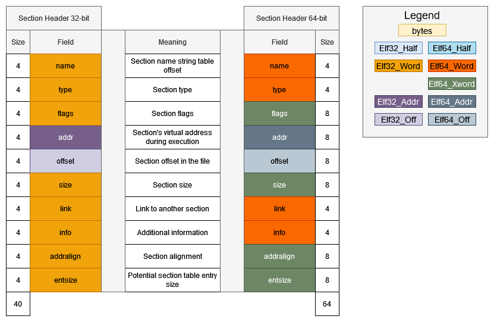
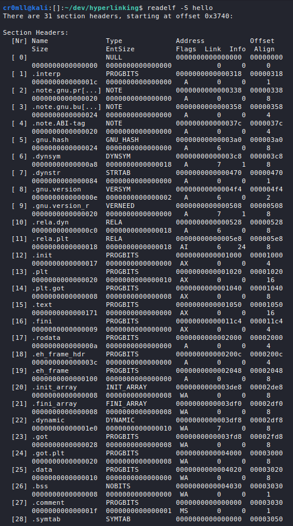

Introduction
Sections comprise the entirety of an ELF binary with the exception of the ELF header, the Programme Header Table and the Section Header Table. Each section is characterised by a single section header. A section must occupy a contiguous block of space in the file and section overlap is not allowed - each byte in the file may only belong to a single function. However, bytes may also pertain to no sections at all, in which case their contents are unspecified.
It is paramount to understand that sections are not loaded as such into the memory image of the binary. Instead, specific parts from them are organised and grouped by the ELF segments. You can imagine sections as turning into segments during load-time. Sections themselves are really only relevant for linking and debugging purposes.
The Section Header Table (SHT)
Sections are described by section headers which are in turn stored in the Section Header Table (SHT). Since the SHT is not pertinent to a binary at runtime, it may be stripped from the file entirely. A corollary of this is the fact that while every ELF object has sections, but not every ELF object has section headers. In fact, a common procedure for hindering reverse engineering and debugging of a binary is to strip the section header table, which makes life rather difficult for debuggers, since they will be unable to directly reference symbol information. Note, however, that this information may still be recovered via analysis of the rest of the binary, and more specifically, of the Programme Header Table due to its inherent overlap between segments and sections.
Ultimately, the section header table is an array of the following structures:
typedef struct
{
Elf32_Word sh_name; /* Section name (string tbl index) */
Elf32_Word sh_type; /* Section type */
Elf32_Word sh_flags; /* Section flags */
Elf32_Addr sh_addr; /* Section virtual addr at execution */
Elf32_Off sh_offset; /* Section file offset */
Elf32_Word sh_size; /* Section size in bytes */
Elf32_Word sh_link; /* Link to another section */
Elf32_Word sh_info; /* Additional section information */
Elf32_Word sh_addralign; /* Section alignment */
Elf32_Word sh_entsize; /* Entry size if section holds table */
} Elf32_Shdr;
typedef struct
{
Elf64_Word sh_name; /* Section name (string tbl index) */
Elf64_Word sh_type; /* Section type */
Elf64_Xword sh_flags; /* Section flags */
Elf64_Addr sh_addr; /* Section virtual addr at execution */
Elf64_Off sh_offset; /* Section file offset */
Elf64_Xword sh_size; /* Section size in bytes */
Elf64_Word sh_link; /* Link to another section */
Elf64_Word sh_info; /* Additional section information */
Elf64_Xword sh_addralign; /* Section alignment */
Elf64_Xword sh_entsize; /* Entry size if section holds table */
} Elf64_Shdr;

sh_name- the offset (in bytes) from the beginning of the section name string table at which the name of the current section is located.sh_type- the type of the section.sh_flags- sections support 1-bit flags which describe certain attributes.sh_addr- if the section is to be loaded into the memory image of the file, this field contains the address at which the section should reside. It holds 0 otherwise.sh_offset- the offset (in bytes) from the beginning of the file where the section resides. For sections of typeSHT_NOBITS, this portrays only a conceptual position.sh_size- the section's size in bytes. Sections of typeSHT_NOBITSmay have this field set to a non-zero value, but will still occupy no space in the file.sh_link- a link to another section header. The interpretation of this field depends on the section's type.sh_info- this field holds additional information and its interpretation is different based on the section's type
sh_type | sh_link | sh_info |
|---|---|---|
SHT_DYNAMIC | The section header index of the string table used by entries in the section. | 0 |
SHT_HASH | The section header index of the symbol table to which the hash table pertains. | 0 |
SHT_RELSHT_RELA | The section header index of the associated symbol table. | The section header index of the section to which the relocation applies. |
SHT_SYMTABSHT_DYNSYM | The section header index of the associated string table. | One greater than the symbol table index of the last local symbol (binding STB_LOCAL). |
SHT_GROUP | The section header index of the associated symbol table. | The symbol table index of an entry in the associated symbol table. The name of the specified symbol table entry provides a signature for the section group. |
SHT_SYMTAB_SHNDX | The section header index of the associated symbol table section. | 0 |
sh_addralign- certain sections have alignment constraints. For example, if the section holds a doubleword, doubleword alignment is to be ensured for the entire section. Values 0 and 1 mean that the section requires no special alignment. Otherwise, only positive integral values of 2 are allowed for this field. Ultimately,sh_addrmust be divisible bysh_addralign.sh_entsize- if the section contains some sort of a table of fixed-sized entries, this field holds the entry size. If no such table is present, this member holds 0.
If the number of section headers is greater than or equal to SHN_LORESERVE (0xff00), then the e_shnum field of the ELF header holds SHN_UNDEF (0) and the actual number of section headers is stored in the sh_size field of the first entry in the section header table.
Certain indices in the section header table are reserved. The first section header has the following form:
| Name | Value | Note |
|---|---|---|
sh_name | 0 | No name |
sh_type | SHT_NULL | Inactive |
sh_flags | 0 | No flags |
sh_addr | 0 | No address |
sh_offset | 0 | No offset |
sh_size | Unspecified | If non-zero, the actual number of section header entries |
sh_link | Unspecified | If non-zero, the index of the section header string table section |
sh_info | 0 | No auxiliary information |
sh_addralign | 0 | No alignment |
sh_entsize | 0 | No entries |
The other reserved indices are described in the following table:
| Name | Value |
|---|---|
SHN_UNDEF | 0 |
SHN_LORESERVE | 0xff00 |
SHN_LOPROC | 0xff00 |
SHN_HIPROC | 0xff1f |
SHN_LOOS | 0xff20 |
SHN_HIOS | 0xff3f |
SHN_ABS | 0xfff1 |
SHN_COMMON | 0xfff2 |
SHN_XINDEX | 0xffff |
SHN_HIRESERVE | 0xffff |
SHN_LORESERVE- the lower bound for reserved indices.SHN_LOPROCthroughSHN_HIPROC- reserved for processor-specific semantics.SHN_LOOSthroughSHN_HIOS- reserved for OS-specific semantics.SHN_ABS- specifies absolute values. For example, symbol definitions relative to this section number are absolutes and are not affected by relocation.SHN_COMMON- symbols defined relative to this section are "common" symbols such as unallocatedCexternal variables.SHN_XINDEX- an escape value denoting an index which cannot fit in the containing field and thus must be found elsewhere (this is specific to the structure it is found in).SHN_HIRESERVE- the upper bound for reserved indices.
You can view the section header table by using the -S option in readelf.

Section Types
SHT_NULL
The section header is marked as inactive and lacks an associated section. The rest of the members of such a header have undefined values.
SHT_PROGBITS
The section contains data whose contents are solely defined and used by the actual programme.
SHT_SYMTAB and SHT_DYNSYM
These sections hold symbol tables. A file may contain at most one from each type of symbol table. Since SHT_SYMTAB is a complete symbol table, it is useful for both link editing and dynamic linking. However, its completeness comes with sizeable contents, so an ELF file may also contain an SHT_DYNSYM section which stores only symbols for dynamic linking. Only the latter may be loaded into memory.
SHT_STRTAB
This section is a string table. A file may have multiple string tables for different purposes.
SHT_RELA and SHT_REL
These sections hold relocation entries with without explicit addends, respectively. Multiple relocation sections are allowed per file.
SHT_HASH
The section is a symbol hash table. An ELF file may contain only one such section.
SHT_DYNAMIC
This section stores information relevant for dynamic linking. Only one such section is allowed for the entire file.
SHT_NOTE
This section stores auxiliary information.
SHT_NOBITS
This section occupies no file space but otherwise resembles SHT_PROGBITS. Whilst the section has a size of 0, the sh_offset field of the header contains the conceptual file offset.
SHT_PREINIT_ARRAY, SHT_INIT_ARRAY, and SHT_FINI_ARRAY
SHT_PREINIT_ARRAY stores pointers to functions which are invoked before any initialisation functions, while SHT_INIT_ARRAY and SHT_FINI_ARRAY have pointers which point to initialisation and termination functions, respectively. All pointers represent procedures with no parameters and a void return.
SHT_GROUP
This section specifies a section group. Section groups represent sets of related sections that must be treated by the linker in a special way. Such sections may only appear in relocatable files and the SHT entry for the group must precede any of the group's members in the section header table.
SHT_SYMTAB_SHNDX
This section is associated with an SHT_SYMTAB section and is required if any of the entries in the symbols table contain section header references to SHN_XINDEX. It holds an array of words and each entry corresponds to a
Other
The SHT_SHLIB section type is reserved but unspecified. As always, values from SHT_LOOS through SHT_HIOS and from SHT_LOPROC through SHT_HIPROC are reserved for OS- and processor-specific semantics, respectively. Values between SHT_LOUSER and SHT_HIUSER may be used as per the application's needs without creating any conflicts.
Special Sections
| Name | Type | Attributes |
|---|---|---|
| .bss | SHT_NOBITS | SHF_ALLOC+SHF_WRITE |
| .comment | SHT_PROGBITS | none |
| .data | SHT_PROGBITS | SHF_ALLOC+SHF_WRITE |
| .data1 | SHT_PROGBITS | SHF_ALLOC+SHF_WRITE |
| .debug | SHT_PROGBITS | none |
| .dynamic | SHT_DYNAMIC | SHF_ALLOC+... |
| .dynstr | SHT_STRTAB | SHF_ALLOC |
| .dynsym | SHT_DYNSYM | SHF_ALLOC |
| .fini | SHT_PROGBITS | SHF_ALLOC+SHF_EXECINSTR |
| .fini_array | SHT_FINI_ARRAY | SHF_ALLOC+SHF_WRITE |
| .got | SHT_PROGBITS | ? |
| .hash | SHT_HASH | SHF_ALLOC |
| .init | SHT_PROGBITS | SHF_ALLOC+SHF_EXECINSTR |
| .init_array | SHT_INIT_ARRAY | SHF_ALLOC+SHF_WRITE |
| .interp | SHT_PROGBITS | SHF_ALLOC/none |
| .line | SHT_PROGBITS | none |
| .note | SHT_NOTE | none |
| .plt | SHT_PROGBITS | ? |
| .preinit_array | SHT_PREINIT_ARRAY | SHF_ALLOC+SHF_WRITE |
| .relname | SHT_REL | SHF_ALLOC/none |
| .relaname | SHT_RELA | SHF_ALLOC/none |
| .rodata | SHT_PROGBITS | SHF_ALLOC |
| .rodata1 | SHT_PROGBITS | SHF_ALLOC |
| .shstrtab | SHT_STRTAB | none |
| .strtab | SHT_STRTAB | SHF_ALLOC/none |
| .symtab | SHT_SYMTAB | SHF_ALLOC/none |
| .symtab_shndx | SHT_SYMTAB_SHNDX | SHF_ALLOC/none |
| .tbss | SHT_NOBITS | SHF_ALLOC+SHF_WRITE+SHF_TLS |
| .tdata | SHT_PROGBITS | SHF_ALLOC+SHF_WRITE+SHF_TLS |
| .tdata1 | SHT_PROGBITS | SHF_ALLOC+SHF_WRITE+SHF_TLS |
| .text | SHT_PROGBITS | SHF_ALLOC+SHF_EXECINSTR |
.bss- this section holds uninitialised data that contributes to a process's memory image. It occupies no space in the file and gets filled with 0s when the programme is run..comment- used for version control..dataand.data1- these hold initialised data that contributes to a process's memory image..debug- holds debugging information and has unspecified contents..dynamic- This section holds dynamic linking information and its attributes will include theSHF_ALLOCbit. Whether theSHF_WRITEbit is set, however, is processor specific..dynstr- this is a string table containing the strings necessary for dynamic linking such as symbol names..dynsym- this section holds the dynamic symbol linking table..fini- contains instructions which contribute to process termination. Execution flow is transferred here when a process exits successfully..fini_array- this section holds function pointers for process termination..got- the Global Offset Table..hash- this section holds a symbol hash table..init- this section contains instructions relevant to process initialisation. The code here is executed before control is transferred to the programme's entry point (calledmainin most cases)..init_array- this section holds function pointers for process initialisation..interp- this section holds the path name of the programme interpreter. If the file has a loadable segment with relocation, the sections' attributes will include theSHF_ALLOCbit..line- this section holds line number information for debugging with source files..note- this section holds auxiliary information..plt- this section holds the Procedure Linkage Table..preinit_array- this section holds function pointers for pre-initialisation..relname and.relaname - these sections hold relocation information, where name is the name of the section for which the relocations are relevant such as.rel.textor.rela.text. If the file has a loadable segment that includes relocation, the sections' attributes will include theSHF_ALLOCbit..rodataand.rodata1- these sections hold read-only data that gets loaded into the memory image of the process..shstrtab- the string table for the section names..strtab- a string table which typically holds symbol names. If the file has a loadable segment that includes the symbol string table, the section's attributes will include theSHF_ALLOCbit..symtab- the complete symbol table. If the file has a loadable segment that includes the symbol table, the section's attributes will include theSHF_ALLOCbit..symtab_shndx- this section holds the special symbol table section index array described above. The section's attributes will include theSHF_ALLOCbit if the associated symbol table section does..tbss- this section holds uninitialised thread-local data which contributes to the memory image. This data is set to all 0s for each new execution flow and occupies no bytes in the file..tdata- this section holds initialised thread-local data which contributes to the memory image. A copy of it is generated for each new execution flow..text- this section holds the executable instructions of the programme.
Section Groups
Some sections occur in interrelated groups or contain references to other sections which become meaningless if the referenced object is removed or altered. Such groups must be included or omitted from the linked object together and may not be separated. Each section is only allowed to be part of a single group.
Such a grouping of sections is denoted by the SHT_GROUP type. In one of the ELF object's symbol tables is an entry whose name provides a signature for the section group. The section header of the SHT_GROUP section specifies this entry: The sh_link field contains the section header index of the symbol table section that contains the entry, while sh_info holds the symbol table index for the appropriate entry.
The data within an SHT_GROUP section is comprised of word entries, where the first entry is a flag word and the rest are section header indices of the sections which make up the group. The sections must each have the SHF_GROUP flag set in their sh_flags fields.